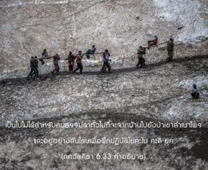
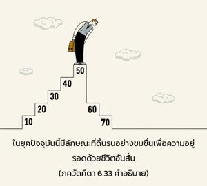

อรฺชุน ตรัสว่า โอ้ มธุสูทน ระบบโยคะที่พระองค์ทรงสรุปให้นี้ดูเหมือนจะปฏิบัติไม่ได้ และข้าไม่มีความอดทนพอเพราะว่าจิตใจไม่สงบนิ่งและไม่มั่นคง


ระบบโยคะที่องค์ศฺรี กฺฤษฺณทรงอธิบายให้ อรฺชุน เริ่มด้วยคำว่า ศุเจา เทเศ และจบด้วยคำว่า โยคี ปรมห์ ได้ทรงถูก อรฺชุน ปฏิเสธตรงนี้จากความรู้สึกที่ว่าไม่สามารถปฏิบัติได้ เป็นไปไม่ได้สำหรับคนธรรมดาทั่วไปที่จะจากบ้านไปยังป่าเขาลำเนาไพรและอยู่อย่างสันโดษเพื่อฝึกปฏิบัติโยคะ ในกลียุคยุคปัจจุบันนี้มีลักษณะที่ดิ้นรนอย่างขมขื่นเพื่อความอยู่รอดด้วยชีวิตอันสั้น ผู้คนไม่จริงจังเกี่ยวกับความรู้แจ้งแห่งตนแม้จะด้วยวิธีที่ง่ายและปฏิบัติได้ จึงไม่จำเป็นต้องพูดถึงระบบโยคะที่ยากลำบากเช่นนี้ซึ่งต้องควบคุมชีวิตการเป็นอยู่ในเรื่องของการนั่ง การเลือกสถานที่ และการทำให้จิตใจไม่ยึดติดกับการปฏิบัติทางวัตถุ ในฐานะที่เป็นนักปฏิบัติ อรฺชุน ทรงคิดว่าเป็นไปไม่ได้ที่จะปฏิบัติตามระบบโยคะนี้ ถึงแม้ว่าทรงมีคุณสมบัติที่เอื้ออำนวยอยู่หลายประการ อรฺชุน ประสูติอยู่ในตระกูล กฺษตฺริย ทรงมีความเจริญมากในคุณสมบัติหลายๆด้าน เช่น เป็นนักรบผู้ยิ่งใหญ่ มีพระชนมายุยืนยาว และยิ่งไปกว่าสิ่งอื่นใดยังเป็นสหายสนิทที่สุดขององค์ภควานฺ ศฺรี กฺฤษฺณ เมื่อห้าพันปีก่อนนี้ อรฺชุน ทรงมีสิ่งเอื้ออำนวยที่ดีกว่าพวกเราที่มีอยู่ในปัจจุบันนี้อย่างมากมายถึงกระนั้นก็ยังปฏิเสธระบบโยคะนี้ อันที่จริงเราไม่พบบันทึกใดๆในประวัติศาสตร์ที่เห็น อรฺชุน ฝึกปฏิบัติโยคะนี้ไม่ว่าในตอนใด ฉะนั้นระบบนี้ต้องพิจารณาว่าโดยทั่วไปแล้วจะเป็นไปไม่ได้ที่จะปฎิบัติในกลียุคนี้ แน่นอนว่าอาจจะเป็นไปได้สำหรับคนบางคนที่หาได้ยากมาก แต่สำหรับผู้คนโดยทั่วไปเป็นข้อเสนอที่เป็นไปไม่ได้ เพราะหากเป็นเช่นนั้นเมื่อห้าพันปีก่อนแล้วปัจจุบันนี้จะเป็นอย่างไร พวกที่เลียนแบบระบบโยคะนี้ซึ่งอยู่ในสถานที่ที่เรียกว่าสถาบันและสมาคมต่างๆ ถึงแม้ว่าจะได้รับความอิ่มเอิบใจแต่เป็นการสูญเสียเวลาไปอย่างแน่นอน พวกนี้อยู่ในอวิชชาอย่างสมบูรณ์เกี่ยวกับจุดมุ่งหมายที่ตนปรารถนา